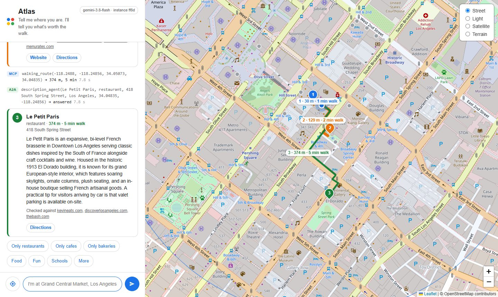
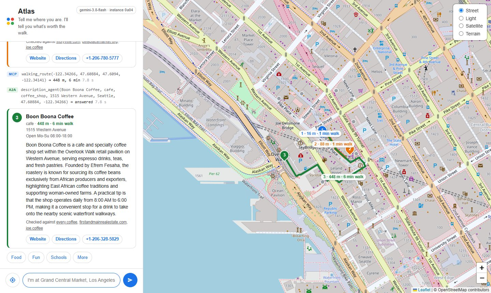

You shipped an AI product in four weeks. It works on your laptop. Now what happens when a hundred people open it at once?
In this session you take one working agent and move it to Google Cloud without rewriting it. The agent is Atlas, a map agent: you tell it where you are, and it finds three places worth the walk, describes each one from checked sources, and draws the route. You do not need to have attended the session where it was built. The finished app is in the repository.
| Step | What you do | What you learn |
|---|---|---|
| 1 | Put the app in a container | What a Dockerfile is, line by line |
| 2 | Run the container on your laptop | The same image runs anywhere |
| 3 | Push the image to Google Cloud | What a registry is for |
| 4 | Deploy it to Cloud Run, privately | One command, and who is allowed in |
| 5 | Read the logs | How to see what your app did in the cloud |
| 6 | Send 20 users at once | One instance takes them all |
| 7 | Tune concurrency | Cloud Run starts more instances, and the app starts forgetting people |
| 8 | Store chats in Firestore | State that survives across instances |
This is what you end up with:
Cloud Run service "atlas" (private)
┌──────────────────────────────────────────────┐
your browser ─────▶ │ instance 1 web app + agent + places server │ ──▶ Gemini (Vertex AI)
load test ─────▶ │ instance 2 web app + agent + places server │ ──▶ Firestore (the chats)
│ instance 3 ...started when traffic grows │ ──▶ Cloud Logging
└──────────────────────────────────────────────┘
every instance is a copy of one image,
kept in Artifact Registry
You do not need to have used Docker or Google Cloud before. This guide starts from an empty laptop.
| You will need | Details |
|---|---|
| A laptop | Windows, macOS or Linux, with permission to install programs and about 5 GB of free disk |
| A Google account | Any Gmail address works |
| A bank card | Google Cloud asks for one to open a billing account, even for small use |
| About an hour | For sections 3 to 5, which you only ever do once. Docker is the long one |
| About 90 minutes | For the eight steps |
A terminal is a window where you type commands. You will use it throughout.
| On | Do this |
|---|---|
| Windows | Press the Windows key, type PowerShell, press Enter |
| macOS | Press Cmd+Space, type Terminal, press Enter |
| Linux | Press Ctrl+Alt+T |
Dark boxes show a terminal. A bright line after the green > is something you type, followed by Enter. Do not type the > itself. Grey lines are what the computer answers; yours may differ slightly.
python --version Python 3.13.0
Type one line at a time and wait for it to finish before typing the next. Every command in this guide is a single line, even when the page wraps it onto two.
Many commands contain YOUR_PROJECT_ID. Replace it with the Project ID you
create in section 4.1, for example my-atlas-123456. Keep it in a note so you
can paste it.
Python runs two small scripts on your laptop. Git downloads the code. The Google Cloud CLI talks to Google Cloud. Docker builds and runs containers. If you already have one of them, run its check and skip ahead.
python --version Python 3.13.0
Any version from 3.11 up is fine. On macOS and Linux the command may be
python3; use that wherever this guide says python until section 5.2.
git --version in the terminal. If Git is missing, a
window offers to install the developer tools. Press Install.git --version git version 2.54.0.windows.1
This gives you the gcloud command. You will use it to switch services on,
to deploy, to change settings and to read logs.
gcloud to your terminal.gcloud --version Google Cloud SDK 571.0.0
Docker is the program that builds a container image and runs it. Docker Desktop is the version with an installer and a window.
wsl --update, and start Docker Desktop again.Open a new terminal and check it:
docker --version Docker version 29.7.2, build a7dcaa6
Then run Docker's own test. It downloads a tiny image and runs it:
docker run --rm hello-world Unable to find image 'hello-world:latest' locally latest: Pulling from library/hello-world 4f55086f7dd0: Pull complete Hello from Docker! This message shows that your installation appears to be working correctly.
You need five things: a project, a billing account, your laptop signed in, four services switched on, and one database created. Each is a few clicks or one command.
A project is a labelled box that holds everything you use on Google Cloud and the bill for it.
my-atlas-123456. The ID is what matters, not the name.You sign in twice, and they are different things. The first signs in you, for
the gcloud commands. The second signs in programs on your laptop, so
the container you run in step 2 can call Gemini without a secret key.
gcloud auth login Your browser has been opened to visit: ... You are now logged in as [you@gmail.com].
A browser tab opens. Choose your account and press Allow. Then tell
gcloud which project to use:
gcloud config set project YOUR_PROJECT_ID Updated property [core/project].
gcloud auth application-default login Credentials saved to file: [...application_default_credentials.json]
The browser opens once more. Allow it again.
On Google Cloud every service is off until you switch it on for your project. This session uses four.
| Service | What it does here |
|---|---|
| Cloud Run | Runs your container, and starts more copies when traffic grows |
| Artifact Registry | Stores the container image so Cloud Run can fetch it |
| Firestore | A database. It keeps the chats, so every copy of the app sees them |
| Vertex AI | Gives the agent the Gemini model |
One command switches on all four. It takes about a minute.
gcloud services enable run.googleapis.com artifactregistry.googleapis.com firestore.googleapis.com aiplatform.googleapis.com Operation "operations/acat.p2-..." finished successfully.
Prefer clicking? Open console.cloud.google.com/apis/library, search for each name in the table, open it, and press Enable.
Switching Firestore on does not create a database. This does. A project gets one default database, and that is the one the app uses.
gcloud firestore databases create --location=us-central1 Waiting for operation to complete...done.
If it answers that the database already exists, your project already has one and you can carry on.
Prefer clicking? Open console.cloud.google.com/firestore, press Create a Firestore database, keep Standard edition and Native mode, choose the region us-central1, and press Create database.
Pick a folder you can find again, such as Documents. Then:
git clone https://github.com/Kiruthika162003/atlas-on-cloud-run.git Cloning into 'atlas-on-cloud-run'...
cd atlas-on-cloud-run
Every command from here on is typed inside this folder. If you close the terminal, open
a new one and cd back into it.
The app's own packages are installed inside the container, not on your laptop. Your laptop only needs two small packages for the load test and the Firestore viewer.
python -m venv .venv
WINDOWS.venv\Scripts\activate
MACOS AND LINUXsource .venv/bin/activate
Your prompt now starts with (.venv). Run the activate line again whenever
you open a new terminal.
pip install -r requirements-laptop.txt Successfully installed google-cloud-firestore-... requests-...
Set-ExecutionPolicy -Scope CurrentUser RemoteSigned, answer Y, and try
the activate line again.WINDOWScopy .env.example .env
MACOS AND LINUXcp .env.example .env
Open the new .env file in any text editor (Notepad is fine) and replace
your-project-id with your Project ID. Save it. The file has one line:
GOOGLE_CLOUD_PROJECT=my-atlas-123456
One script tests every part of sections 3 and 4. It stops at the first problem and tells you what to type to fix it.
python check.py Checking your setup [ ok ] Python 3.13 [ ok ] The packages are installed [ ok ] The settings file points at project my-atlas-123456 [ ok ] Docker is running [ ok ] gcloud is signed in as you@gmail.com [ ok ] Programs on this computer are signed in [ ok ] Cloud Run, Artifact Registry, Firestore and Vertex AI are switched on [ ok ] The Firestore database answers Everything works. You are ready to build the container.
A line that starts with [ FIX ] names the problem, and the line under it is
the fix. Do what it says and run python check.py again until you see every
line as [ ok ].
| File or folder | What it is |
|---|---|
atlas/ | The web app (the map page) and the recommendation agent behind it |
mcp_server/ | The places server: three map tools the agent calls |
description_agent/ | A second agent that describes each place from Google Search |
skills/ | A walking tour skill, one file of instructions |
Dockerfile | The recipe for the container image |
serve.sh | What the container runs when it starts |
requirements.txt | The Python packages that go inside the container |
loadtest.py | Sends many users at once, from your laptop |
sessions.py | Shows the chats stored in Firestore, or clears them |
check.py | The setup check you just ran |
The agents were not rewritten. The app file, atlas/app.py, has four small
changes, each marked with a comment. Open the file and find them.
| Change | What | Why the cloud needs it |
|---|---|---|
| 1 | Chats can be kept in Firestore | Several copies of the app run at once, and they must share what users said |
| 2 | Every reply names the instance that sent it | So you can see scaling happen |
| 3 | The port comes from the PORT setting | Cloud Run decides the port, not the app |
| 4 | One log line per chat turn | In the cloud, logs are the only window into your app |
Change 1 is the important one. It is six lines:
if os.getenv("ATLAS_SESSIONS") == "firestore":
from google.adk.integrations.firestore.firestore_session_service import FirestoreSessionService
sessions = FirestoreSessionService()
else:
sessions = InMemorySessionService()
runner = Runner(agent=root_agent, app_name="atlas", session_service=sessions, auto_create_session=True)
The agent is handed a session service, the thing that remembers each chat. One setting decides whether that memory is inside the running program or in a database. You will flip that setting in step 8 without touching the code.
On your laptop the app works because your laptop has the right Python, the right packages and the right files. A container image packs all of that into one file, so it runs the same way on any machine, including Google's.
Open Dockerfile. It is short, and every line is a step in the recipe.
FROM python:3.13-slim
WORKDIR /app
COPY requirements.txt .
RUN pip install --no-cache-dir -r requirements.txt
COPY . .
ENV GOOGLE_GENAI_USE_VERTEXAI=TRUE \
GOOGLE_CLOUD_LOCATION=global \
ATLAS_MODEL=gemini-3.8-flash \
PYTHONUNBUFFERED=1 \
PYTHONWARNINGS=ignore
CMD ["sh", "serve.sh"]
| Line | What it means |
|---|---|
FROM | Start from a small Linux that already has Python 3.13 |
WORKDIR | Work in a folder called /app inside the image |
COPY requirements.txt then RUN pip install | Install the packages. Doing this before copying the code means Docker reuses this slow step until the package list changes |
COPY . . | Copy the code in. The file .dockerignore lists what to leave out, such as .env |
ENV | Settings baked into the image: use Gemini through Vertex AI, and print logs straight away |
CMD | What to run when a container starts |
Atlas is three programs: the places server, the description agent and the web app. The container starts all three. The first two stay private inside the container, and only the web app listens on the port that Cloud Run sends traffic to.
python mcp_server/server.py &
python description_agent/agent.py &
exec gunicorn --chdir atlas --bind :${PORT:-8080} --workers 1 --threads 16 --timeout 0 app:app
gunicorn is a web server made for production. --threads 16
lets one copy of the app talk to 16 users at the same moment. Remember that number; it
comes back in step 7.
The dot at the end means "use the Dockerfile in this folder". -t atlas
names the image.
docker build -t atlas . => [internal] load build definition from Dockerfile => [internal] load metadata for docker.io/library/python:3.13-slim => [1/5] FROM docker.io/library/python:3.13-slim => [2/5] WORKDIR /app => [3/5] COPY requirements.txt . => [4/5] RUN pip install --no-cache-dir -r requirements.txt 185.4s => [5/5] COPY . . => naming to docker.io/library/atlas:latest
The first build took a little over three minutes here, nearly all of it installing packages. Build again after changing only code and it takes seconds, because the package step is reused.
docker build --platform linux/amd64 -t atlas . instead. Cloud Run runs
images built for that kind of processor.See the image you made:
docker images atlas IMAGE ID DISK USAGE CONTENT SIZE atlas:latest 152411d1171e 392MB 88.4MB
Before sending the image anywhere, prove it works. If it runs here, it will run on Cloud Run.
The command is long because the container starts with nothing: no project, no sign-in. You pass both in.
WINDOWSdocker run --rm --name atlas-local -p 8080:8080 --env-file .env -e GOOGLE_APPLICATION_CREDENTIALS=/adc.json -v "$env:APPDATA\gcloud\application_default_credentials.json:/adc.json:ro" atlas
MACOS AND LINUXdocker run --rm --name atlas-local -p 8080:8080 --env-file .env -e GOOGLE_APPLICATION_CREDENTIALS=/adc.json -v "$HOME/.config/gcloud/application_default_credentials.json:/adc.json:ro" atlas
| Part | What it does |
|---|---|
--rm | Throw the container away when it stops |
--name atlas-local | A name for the running container, so you can spot it |
-p 8080:8080 | Connect port 8080 on your laptop to port 8080 in the container |
--env-file .env | Hand it your Project ID |
-e and -v | Lend it the sign-in file from section 4.3, read only. This is only for your laptop |
atlas | The image to run |
The three programs start. You are ready when you see these lines:
[INFO] Using worker: gthread [INFO] Booting worker with pid: 9 Open. Anyone who can reach this address may call the tools. INFO: Uvicorn running on http://localhost:8001 (Press CTRL+C to quit) INFO: Uvicorn running on http://localhost:8002 (Press CTRL+C to quit)
Open http://localhost:8080 in your browser and ask:

Look at the terminal. The app printed one line for the turn. That is Change 4:
turn instance=ff8d session=be91b9ff seconds=43.4 asked="I'm at Grand Central Market, Los Angeles. Find me food."
A full answer takes a while because it is about ten model calls and three Google searches. Open a second terminal to see the running container:
docker ps NAMES IMAGE STATUS PORTS atlas-local atlas Up About a minute 0.0.0.0:8080->8080/tcp
Go back to the first terminal and press Ctrl+C to stop the container.
The image is on your laptop. Cloud Run cannot reach your laptop, so the image has to go somewhere Google Cloud can fetch it from. That place is a registry, and Google's is called Artifact Registry.
gcloud artifacts repositories create atlas --repository-format=docker --location=us-central1 Create request issued for: [atlas] Waiting for operation [projects/my-atlas-123456/locations/us-central1/operations/...] to complete...done. Created repository [atlas].
gcloud auth configure-docker us-central1-docker.pkg.dev Adding credentials for: us-central1-docker.pkg.dev Docker configuration file updated.
If it asks Do you want to continue (Y/n)?, type Y.
An image is pushed to wherever its name says. So you give your image a second name that is its full address: registry, project, repository, image and version.
docker tag atlas us-central1-docker.pkg.dev/YOUR_PROJECT_ID/atlas/atlas:v1
It prints nothing. That is normal.
docker push us-central1-docker.pkg.dev/YOUR_PROJECT_ID/atlas/atlas:v1 The push refers to repository [us-central1-docker.pkg.dev/my-atlas-123456/atlas/atlas] 601b5f0ff341: Pushed 3a5db7051419: Pushed ecc510c1e359: Pushed 9a55aeff9866: Pushed v1: digest: sha256:0f21522798da238fc1ceefcaed3d61fd989e1f4274f77df91933e360a00b7cb5 size: 856
This took 72 seconds here. Each line is a layer of the image. Next time, only the layers that changed are sent.
gcloud run deploy atlas --source . uploads the folder, builds the image in
the cloud with Cloud Build, and stores it. It is handy, and it hides what you just learned.
It needs one more service switched on, cloudbuild.googleapis.com.Cloud Run takes an image and gives you back a web address. It starts containers when requests arrive and removes them when they stop.
gcloud run deploy atlas --image us-central1-docker.pkg.dev/YOUR_PROJECT_ID/atlas/atlas:v1 --region us-central1 --no-allow-unauthenticated --memory 1Gi --set-env-vars GOOGLE_CLOUD_PROJECT=YOUR_PROJECT_ID Deploying container to Cloud Run service [atlas] in project [my-atlas-123456] region [us-central1] Deploying new service... Creating Revision.........done Routing traffic.....done Done. Service [atlas] revision [atlas-00001-t4t] has been deployed and is serving 100 percent of traffic. Service URL: https://atlas-108279147534.us-central1.run.app
| Part | What it does |
|---|---|
atlas | The name of the service |
--image | The image you just pushed |
--region | Where in the world it runs |
--no-allow-unauthenticated | Private: only signed-in people you allow may call it |
--memory 1Gi | Three Python programs need more than the default 512 MB |
--set-env-vars | The one setting the image does not carry: your project |
It took 27 seconds here. Copy the Service URL from the last line; you need it in step 6. Each deploy or settings change makes a new revision, a numbered version of the service.
Paste your Service URL into a browser. You get Error: Forbidden. That is the service doing its job: every request your agent answers costs you money, so strangers should not be able to send them. From the terminal it is the number 403:
curl -s -o /dev/null -w "%{http_code}" YOUR_SERVICE_URL
403
On Windows PowerShell type curl.exe where this guide says
curl.
This command opens a private tunnel from your laptop to the service and attaches your sign-in to every request. Leave it running in its own terminal.
gcloud run services proxy atlas --region us-central1 --port 8080 Proxying to Cloud Run service [atlas] in project [my-atlas-123456] region [us-central1] http://127.0.0.1:8080 proxies to https://atlas-xniespgdxa-uc.a.run.app
The first time, it asks to install a small component. Answer Y. Then open http://localhost:8080 and ask a question. Same page as before, but this time the answer comes from Google Cloud.

When you are done looking, press Ctrl+C in the proxy terminal.
On your laptop you watched the terminal. In the cloud there is no terminal. Everything your app prints goes to Cloud Logging, and you read it from there.
Show only the lines the app prints for each chat turn:
gcloud run services logs read atlas --region us-central1 --limit 12 --log-filter "textPayload:turn" 2026-10-14 03:33:10 turn instance=40c8 session=bcde2948 seconds=22.6 asked='Hi, my name is Hana.' 2026-10-14 03:33:11 turn instance=40c8 session=f5b86274 seconds=16.1 asked='What is my name? Answer with the name only.' 2026-10-14 03:33:13 turn instance=7236 session=bcde2948 seconds=1.4 asked='What is my name? Answer with the name only.' 2026-10-14 03:33:18 turn instance=40c8 session=85a7263e seconds=4.3 asked='What is my name? Answer with the name only.'
These lines are from a later step, when the load test was running. Each one says which
instance served which chat, how long it took, and what was asked. Leave off
--log-filter to see everything, including the start-up lines of each new
instance.
key=value text on purpose. When something goes wrong at 2 a.m., you want to
type session=bcde2948 and see every turn of that chat, on every instance.One person asking one question tells you nothing about production. The load test sends twenty people at the same moment.
Each pretend user has a two-line chat. Neither line needs a map or a search, so the whole test costs a few cents:
If the agent answers "Asha", it remembered. The script counts how many users were remembered, and which instances answered.
python loadtest.py YOUR_SERVICE_URL --users 20 20 users at once, answered by 1 instance 0a04 ######################################## 40 remembered 20 of 20 users a two-line chat took 9.6s at best, 12.6s in the middle, 41.6s at worst
One instance answered all 40 lines, and everyone was remembered. So far, so good.
Why only one instance? Because Cloud Run's default is to send up to 80 requests at a time to a single instance before it starts another. Twenty is well under eighty.
--threads 16 in serve.sh: this app can only work on 16 requests
at once, whatever Cloud Run sends it.Two numbers control scaling. Concurrency is how many requests one instance takes at a time. Max instances is the ceiling on how many instances there can be.
Set concurrency low, so that twenty users need more than one instance, and cap the instances at five so the bill has a ceiling too:
gcloud run services update atlas --region us-central1 --concurrency 4 --max-instances 5 Done. Service [atlas] revision [atlas-00003-jzr] has been deployed and is serving 100 percent of traffic.
Nothing was rebuilt. This is a setting on the service, and it took a few seconds. Now the same load test:
python loadtest.py YOUR_SERVICE_URL --users 20
20 users at once, answered by 3 instances
5761 ################## 18
3997 ########### 11
0bda ########### 11
turned away and asked again: 5 requests (HTTP 500)
remembered 6 of 20 users
a two-line chat took 19.9s at best, 38.8s in the middle, 82.9s at worst
Three things happened, and each one is a lesson.
Three instances answered. Nobody started them; Cloud Run saw more requests than one instance was allowed to take and started more. This is the instance count for the whole test run, read from Cloud Monitoring:
In the console, the same picture is under Metrics, in the chart Container instance count.
Five requests got an error first. Cloud Logging says why:
The request was aborted because there was no available instance.
A new instance needs a few seconds to start: fetch the image, start Python, start three programs. That is a cold start. During a sudden burst, a request can wait for an instance that is not up yet and be turned away with HTTP 429 or 500. The load test does what a real client should do: it waits three seconds and asks again, and counts how often it had to. Section 15 covers how to reduce this.
Only 6 of 20 users were remembered. Nothing crashed, and no error was shown for it. The users simply got a wrong answer. Here is why:
Asha: "Hi, my name is Asha." ──▶ instance 5761 (remembers Asha, in its own memory) Asha: "What is my name?" ──▶ instance 3997 (has never heard of Asha)
Each instance kept its chats in its own memory. Cloud Run sends each request to whichever instance has room, so the second line of a chat often lands on an instance that never saw the first. The six who were remembered were lucky: both of their lines happened to reach the same instance.
The fix is to stop keeping chats inside the instance. Put them in a database that every instance reads and writes. The app is then stateless: any instance can serve any user.
The code is already there; it is Change 1 from section 6.1. Switch it on with one setting. No rebuild, no push.
gcloud run services update atlas --region us-central1 --update-env-vars ATLAS_SESSIONS=firestore Done. Service [atlas] revision [atlas-00009-vsz] has been deployed and is serving 100 percent of traffic.
Run the same load test again:
python loadtest.py YOUR_SERVICE_URL --users 20
20 users at once, answered by 3 instances
5a4d ################ 16
7236 ############# 13
40c8 ########### 11
turned away and asked again: 8 requests (HTTP 429)
remembered 20 of 20 users
a two-line chat took 18.4s at best, 27.9s in the middle, 97.6s at worst
Still three instances. Still some requests turned away at first. But every one of the twenty was remembered, whichever instance they landed on.
| Settings | Instances | Remembered |
|---|---|---|
| Default (concurrency 80), chats in memory | 1 | 20 of 20 |
| Concurrency 4, chats in memory | 3 | 6 of 20 |
| Concurrency 4, chats in Firestore | 3 | 20 of 20 |
Look for one chat that was served by two different instances. The session ID is the same, the instance is not, and the answer was still right:
gcloud run services logs read atlas --region us-central1 --limit 12 --log-filter "textPayload:turn" 2026-10-14 03:33:10 turn instance=40c8 session=bcde2948 seconds=22.6 asked='Hi, my name is Hana.' 2026-10-14 03:33:13 turn instance=7236 session=bcde2948 seconds=1.4 asked='What is my name? Answer with the name only.' 2026-10-14 03:33:50 turn instance=7236 session=293d0ae1 seconds=53.4 asked='Hi, my name is Bruno.' 2026-10-14 03:33:54 turn instance=5a4d session=293d0ae1 seconds=2.4 asked='What is my name? Answer with the name only.'
python sessions.py 20 chats stored in Firestore 0b2b3223 4 events 185baf32 4 events 1fd0eb7b 4 events 293d0ae1 4 events 322f09a0 4 events ... and 15 more
Twenty chats, one per pretend user. Four events each: two things the user said and two answers.
To look at them in the console, open console.cloud.google.com/firestore, click the (default) database, and walk down this path. Each step is a click:
adk-session ▶ atlas ▶ users ▶ visitor ▶ sessions ▶ (one chat) ▶ events
Open an event and you can read the text the user typed and what the agent answered. That also tells you something to take seriously in a real product: chat history is now stored data. Decide who may read it and how long you keep it.
gcloud run services proxy atlas --region us-central1 --port 8080The settings in this guide were chosen to make scaling visible with only twenty users. For your own product, think about them like this.
| Setting | What it trades | A place to start for an agent |
|---|---|---|
--concurrency | Higher: fewer instances and a smaller bill, but slower answers when one instance is crowded. Lower: faster, more instances | No higher than the number of requests your server can really work on at once. Here that is the 16 threads in serve.sh |
--max-instances | A ceiling on scale and on cost. Too low and users are turned away at busy times | Enough for your busiest expected moment, and no more. It also protects the model quota behind the agent |
--min-instances | Keeps instances warm so nobody waits for a cold start. You pay for them all day | 0 while you are building. 1 when real users are waiting |
--memory, --cpu | Bigger instances start faster and take more requests each, and cost more per second | Watch the memory chart under Metrics and leave some room above the peak |
--timeout | How long one request may run | The default is five minutes, enough for a long agent turn |
Change any of them with the same command you used in step 7, for example:
gcloud run services update atlas --region us-central1 --concurrency 8 --max-instances 10
Then run the load test again and compare. That loop, change one number and measure, is what tuning means.
429 from the model, more instances
will not help.--allow-unauthenticated, knowing every request costs money.A checklist to prove each piece to yourself. Every line is something you can run and see.
| Test | Command or action | You should see |
|---|---|---|
| Your setup | python check.py | Eight lines of [ ok ] |
| Docker works | docker run --rm hello-world | "Hello from Docker!" |
| The image exists | docker images atlas | One row, about 390 MB |
| The container runs | The docker run line from step 2, then open localhost:8080 | The map, and an answer with three places |
| The image is in the cloud | gcloud artifacts docker images list us-central1-docker.pkg.dev/YOUR_PROJECT_ID/atlas | One image named atlas |
| The service is up | gcloud run services list | A row named atlas with a URL |
| It is private | Open the Service URL in a browser | Error: Forbidden |
| It answers you | Start the proxy, open localhost:8080 | The map, with a Cloud Run instance in the badge |
| Logs arrive | The logs command from step 5 | A turn instance=... line for what you just asked |
| It scales | The load test with concurrency 4 | "answered by" more than 1 instance |
| It remembers | The load test with Firestore on | remembered 20 of 20 users |
| Chats are stored | python sessions.py | A count of chats, each with events |
| Current settings | gcloud run services describe atlas --region us-central1 | Concurrency, max instances and the env vars you set |
A Cloud Run service with no traffic runs zero instances and costs nothing for compute. The stored image and the stored chats are small, but there is no reason to leave them. Three commands remove everything this guide created.
Delete the stored chats:
python sessions.py --clear 20 chats stored in Firestore All cleared.
Delete the service:
gcloud run services delete atlas --region us-central1 Deleting [atlas]...done. Deleted service [atlas].
Delete the image repository:
gcloud artifacts repositories delete atlas --location us-central1 Delete request issued for: [atlas] Deleted repository [atlas].
Answer Y when the last two ask you to confirm. To free the disk space on your
laptop as well, run docker rmi atlas.
| What you used | How it is charged |
|---|---|
| Cloud Run | For the seconds instances spend handling requests. There is a monthly free allowance |
| Gemini on Vertex AI | For the text going in and out. A full map answer is about ten model calls |
| Google Search grounding | Per search, on top of the model. Only full map answers use it, not the load test |
| Artifact Registry | For stored images, per GB per month. One 90 MB image is within the free allowance |
| Firestore | For reads, writes and storage. There is a daily free allowance, far above what a workshop uses |
| Cloud Logging | For log volume, with a large monthly free allowance |
To see what you actually spent, open console.cloud.google.com/billing, choose your billing account, and open Reports. Costs can take a day to appear.
| What you see | What it means | What to do |
|---|---|---|
| "cannot connect to the Docker daemon" or "docker daemon is not running" | Docker Desktop is closed | Open it and wait for Engine running |
| Docker Desktop will not start on Windows and mentions WSL | WSL 2 is missing or old | Run wsl --update in PowerShell, restart, open Docker again |
docker run says "port is already allocated" | Something else is using port 8080 | Stop the other program, or use -p 8081:8080 and open localhost:8081 |
| The local container answers with an error about credentials | The sign-in file was not found | Run gcloud auth application-default login, then the docker run line again |
docker push says "denied" or "unauthorized" | Docker is not signed in to the registry, or the address has a typo | Run step 9.2 again. Check the Project ID inside the image address |
docker push says the repository does not exist | Step 9.1 was skipped, or used a different region | Run step 9.1 |
| A command says a service "has not been used in project" or "is disabled" | That service is not switched on | Run the command from section 4.4 |
| Deploy fails with "container failed to start and listen on the port" | The app crashed while starting | Read the logs (step 5). Run the image locally (step 2); it will fail the same way and show you why |
| The Service URL shows "Error: Forbidden" | Nothing is wrong. The service is private | Use the proxy (step 10.2) |
| The load test says every request was turned away with HTTP 403 | Your sign-in was not attached | Run gcloud auth login and try again |
| The map answers "Permission denied" for Vertex AI or Firestore | The service account of the Cloud Run service lacks a role. Some organisations restrict the default | In the console open IAM, find the account ending -compute@developer.gserviceaccount.com, and add the roles Vertex AI User and Cloud Datastore User |
| Firestore errors mentioning that the database does not exist | Section 4.5 was skipped | Create the database, then run the test again |
| A row in the chat ends "the map service refused the request" | The free map service is limiting requests from that address | Wait a few seconds and ask again |
Answers are slow, or the logs show 429 | The model is busy or your quota is reached | Wait a minute. Lower the number of users in the load test |
| On a Mac the deploy fails with "exec format error" in the logs | The image was built for the Mac's processor | Build with --platform linux/amd64 (step 1), tag, push and deploy again |
| Word | Meaning |
|---|---|
| Agent | A model with instructions and tools, working toward a goal |
| Image | Your app and everything it needs, packed into one file |
| Container | A running copy of an image |
| Dockerfile | The recipe for building an image |
| Registry | A store for images. Google's is Artifact Registry |
| Tag | A name and version for an image, such as atlas:v1 |
| Cloud Run | A Google Cloud service that runs containers and scales them with traffic |
| Service | One app on Cloud Run, with one web address |
| Revision | A numbered version of a service. Every deploy or settings change makes one |
| Instance | One running copy of your container on Cloud Run |
| Autoscaling | Adding instances when traffic grows and removing them when it falls |
| Concurrency | How many requests one instance handles at the same time |
| Cold start | The wait while a new instance starts up |
| Scale to zero | No instances, and no compute cost, when there is no traffic |
| Stateless | An app that keeps nothing in its own memory between requests, so any copy can serve anyone |
| Session | One conversation: what the user said and what the agent answered |
| Firestore | A Google Cloud database that stores documents in collections |
| Service account | An identity for a program, so it can call Google Cloud without a password |
| Environment variable | A named setting handed to a program when it starts, such as ATLAS_SESSIONS |
| Load test | Sending many requests at once on purpose, to see what breaks |
| Cloud Logging | Where everything your cloud app prints ends up |
| HTTP 403 | "You are not allowed in" |
| HTTP 429 | "Too busy right now, try again" |